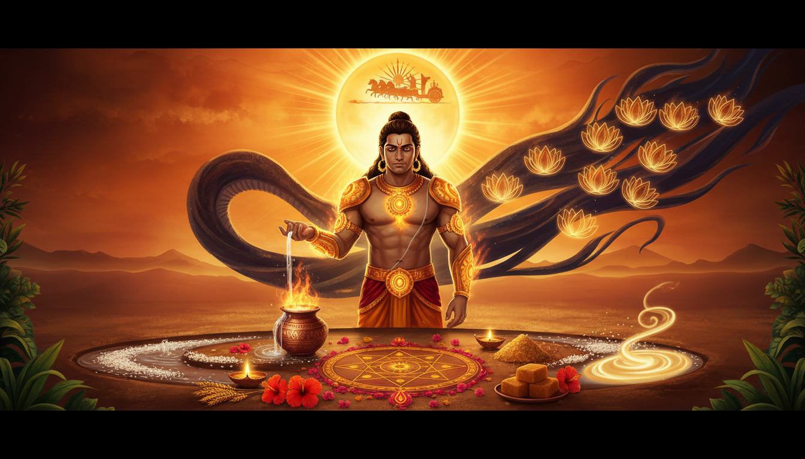

कुछ घाव शरीर पर नहीं होते। वे स्वर में आते हैं, किसी का परिचय सुनते समय एक क्षण के लिए रुकने में आते हैं, और यह डर बन जाते हैं कि कहीं मेरी गरिमा किसी और के बुरे वक्त से छिन न जाए।

कर्ण का घाव यही है। वे सूर्य के पुत्र हैं, फिर भी संसार बार-बार कहता है कि उनकी रोशनी लायक नहीं है: न वंश पर्याप्त है, न जाति, न स्थान, न अनुमति। कथा एक दैवी वरदान से शुरू होती है और एक सामाजिक अस्वीकार से भी। अंत में वह दान इतना संपूर्ण होता है कि देवता भी चौंक जाते हैं।
यह केवल दान की कथा नहीं है। यह उन सबके लिए प्रामाणिक उपाय-कथा है जिनका आत्मविश्वास अस्वीकार ने घायल किया है, जिनके पिता या पैतृक क्रम टूटा हुआ लगता है, जिनकी मेहनत बार-बार अपमान से टकराती है, या जिनका क्रोध वास्तव में कवच पहने शोक है। कर्ण सिखाते हैं कि घाव को तेजस् में कैसे बदलें, और कड़वाहट को जीवन का स्वामी कैसे न बनने दें।
1. कथा: कठिन जगत में जन्मी रोशनी
कुंती को समर्थ मंत्र मिलता है। कौतूहलवश, विवाह से पहले वे सूर्य का आवाहन करती हैं। सूर्य अद्भुत तेज के साथ प्रकट होते हैं। उस संबंध से एक पुत्र जन्म लेता है। वह जन्म से ही कवच धारण किए होता है और कानों में दिव्य कुंडल चमकते हैं।
शिशु के पास दैवी सुरक्षा है। माता के मन में भय है।
कुल-कलंक के भय से कुंती उसे नदी में बहा देती हैं। राधा और अधिरथ उसे बड़े प्रेम से पालते हैं। बालक वसुसेन बनता है, सूर्य का उपासक, शस्त्र-विद्या में अद्भुत, और यशस्वी इसलिए कि जो मांगता है उसे खाली नहीं लौटाता। परंतु हर सभा उसे याद दिलाती है कि लोग उसे रथी-पुत्र मानते हैं, प्रकाश का पुत्र नहीं।
बाद में इंद्र, अर्जुन के पिता और देवराज, युद्ध से पहले कर्ण को कमजोर करना चाहते हैं। उन्हें पता है कि कर्ण दान से इनकार नहीं कर सकते। वे ब्राह्मण का वेश धरकर कवच और कुंडल मांगते हैं। स्वप्न में स्वयं सूर्य कर्ण को समझाते हैं कि यह छल है और यही उनके प्राणों की रक्षा कर रहा है।
कर्ण जानते हैं। फिर भी देते हैं।
वे अपने शरीर से कवच काटते हैं, कुंडल इंद्र को देते हैं, और बदले में एक ऐसा अस्त्र पाते हैं जिसका प्रयोग केवल एक बार हो सकता है। महाभारत कहती है, उस दान की तीव्रता देखकर देवता भी हिल जाते हैं। बाहरी सुरक्षा जाती है, पर भीतर की महिमा दिखने लगती है।
युद्ध से पहले श्रीकृष्ण जन्म-रहस्य खोलकर कर्ण को पांडवों में राजपद देना चाहते हैं। कर्ण मना कर देते हैं। वे उस मित्र का विश्वास नहीं तोड़ना चाहते जिसने सबके उपहास के बीच उन्हें अपनाया था। कुंती से वे वचन देते हैं कि वे पांच पुत्रों की माता रहेंगी: या अर्जुन रहेगा या कर्ण।
अंतिम युद्ध में उनके रथ का पहिया धरती में धंसता है, पुराने शाप फलित होते हैं, और वे अपने तेज और अपनी भूल दोनों का फल भोगते हैं। तथापि परंपरा उन्हें केवल पराजित योद्धा नहीं मानती। वह उन्हें दानवीर कहती है, उस मनुष्य को जिसकी गरिमा दूसरों की स्वीकृति से निर्मित नहीं थी।
उनकी मुक्ति कर्म से भागना नहीं है। यह भीतर की स्वतंत्रता है: अस्वीकार मेरे जीवन में घटित हो सकता है, पर वह मेरे व्यक्तित्व का निर्णायक नहीं होगा।
2. कार्मिक गांठ: पहचान, पिता और मान्यता
ज्योतिष में सूर्य पिता, आत्मसम्मान, अधिकार, प्रतिष्ठा, दृष्टि, अस्थि, प्राणाग्नि और बिना झुके जीवन के केंद्र में खड़े रहने की क्षमता का कारक है।
कर्ण का जीवन इसी सूर्य-तनाव का रूपक है: भीतर अपार प्रकाश, बाहर निरंतर अस्वीकार। उनके पास सूर्य का तेज है, पर सामाजिक पहचान छिपी है। दिव्य पिता हैं, पर वंश का पूरा ज्ञान नहीं। कवच है, फिर भी अपमान से मन असुरक्षित रहता है। इसीलिए यह कथा उनके लिए अत्यंत उपयोगी है जो अनुभव करते हैं:
- पिता या पैतृक रिश्तों का मौन,
- वास्तविक काबिलियत के बावजूद आत्मविश्वास की कमी,
- योग्य होकर भी बार-बार उपेक्षित होना,
- आलोचना से अत्यधिक घाव खाना,
- प्रतिष्ठा से अपनी पुष्टि कराने की जल्दबाजी,
- दान से सम्मान खरीदने की प्रवृत्ति,
- कड़वाहट के नीचे दबा शोक,
- और सफलता के बाद अचानक उलटी गति।
उपाय अहंकार को और ऊँचा करना नहीं है। सूर्य अंधेरे से बहस नहीं करता। उपाय गरिमा लौटाना है: कौशल, अनुशासन, सेवा, सत्य और स्थिर प्रकाश।
सूर्य उपाय सारिणी
| सूर्य का दबाव | अनुभव | कर्ण-सूर्य अभ्यास |
|---|---|---|
| क्षीण या पीड़ित सूर्य | आत्मविश्वास की कमी, दिखने का भय | प्रातः अर्घ्य, एक सत्य कार्य, मुद्रा साधना, 27 बार सूर्य मंत्र |
| सूर्य-शनि संबंध | बिना मान्यता कर्तव्य, पैतृक कर्म | रविवार सेवा, धैर्यपूर्वक कार्य, बड़ों का सम्मान, गेहूं या गुड़ दान |
| सूर्य-राहु संबंध | प्रतिष्ठा की भूख, पहचान का भ्रम, आकस्मिक यश या दोष | ग्रहण में मौन, शुद्ध वाणी, छल त्याग, तांबा या तिल दान |
| सूर्य-केतु संबंध | पिता से विरक्ति, पैतृक शोक | पितृ तर्पण, एक पारिवारिक संस्कार क्षमा, एक दैनिक कौशल |
| कठिन भावों में सूर्य | दूसरों की स्वीकृति से आत्मबोध | रोज एक गुण लिखना, बिना दर्शकों के अभ्यास, चुप सेवा |
ये जादू नहीं हैं। ये अनुशासन हैं जो व्यक्तित्व को अपने प्रकाश की स्मृति लौटाते हैं।
3. 2026 ग्रह संक्रमण: कन्या सूर्य, मीन शनि, कुंभ-सिंह राहु-केतु
इस लेखन के समय निरयण सूर्य कन्या राशि में चल रहा है, विशेषकर हस्त नक्षत्र के प्रभाव में। हस्त कौशल, उपचार, शिल्प और कुशल हाथों से जुड़ा है। शनि मीन राशि में हैं, भावनाओं और पैतृक कर्म की शुद्धि मांग रहे हैं। गुरु कर्क राशि में पोषण और मातृ-रेखा का संतुलन दे रहे हैं। राहु-केतु कुंभ से सिंह की धुरी पर हैं, अर्थात एक ओर सामूहिक महत्त्वकांक्षा और दूसरी ओर व्यक्तिगत पहचान, गरिमा और पैतृक स्मृति।
यही कारण है कि कर्ण-सूर्य साधना इस समय विशेष प्रासंगिक है:
- कन्या सूर्य कहता है: कौशल शुद्ध करो, घोषणा नहीं।
- हस्त कहता है: अपने हाथों से उपचार और सृजन करो।
- मीन शनि कहता है: विरासत में मिली कड़वाहट मत बढ़ाओ।
- कर्क गुरु कहता है: माता, पोषण और भावना की सेवा करो।
- कुंभ-सिंह राहु-केतु कहते हैं: उधार की प्रतिष्ठा और स्वाभिमान में अंतर पहचानो।
यह व्यक्तिगत भविष्यवाणी नहीं है। संक्रमण का फल पूरी कुंडली, चंद्र राशि, लग्न और दशा पर निर्भर करता है। इसे आदेश की तरह नहीं, आह्वान की तरह लो।
4. कवच-कुंडल: भीतरी कवच की दुर्लभ साधना
कर्ण का कवच और कुंडल केवल आभूषण नहीं हैं। प्रतीक रूप में कवच वह सीमा है जो गरिमा की रक्षा करती है। कुंडल वह भीतरी चमक है जो दुनिया जब गलत नाम दे, तो भी व्यक्ति अपनी पहचान खोता नहीं।
जब कर्ण उन्हें दान कर देते हैं, तो दान की ऊँचाई और उसका खतरा दोनों एक साथ दिखते हैं। कोई प्रतिज्ञा इतनी प्रतिष्ठा से जुड़ जाती है कि व्यक्ति छवि बचाने के लिए अपना शोषण करने लगता है। इसीलिए परिपक्व कर्ण-सूर्य उपाय में दो गति हैं:
- एक झूठा कवच छोड़ो, जैसे श्रेष्ठ दिखने की जरूरत, अत्यधिक समझाने की आदत, या दूसरों की स्वीकृति पर निर्भरता।
- एक सच्चा कवच बनाओ, जैसे कौशल, वचन, स्वस्थ सीमा, या दैनिक अनुशासन।
भीतरी कवच-कुंडल अनुष्ठान
- प्रातः, यदि संभव हो तो सूर्योदय के समय पूर्व की ओर खड़े होओ।
- शरीर सीधा रखो, कठोर नहीं।
- तांबे के पात्र में जल लो; शुद्ध बर्तन भी पर्याप्त है।
- एक झूठे सुरक्षा-आवरण का नाम लो: घमंड, तुलना, दोषारोपण, या साधारण होने का भय।
- ॐ ह्रां ह्रीं ह्रौं सः सूर्याय नमः 12 बार जपो।
- छाती, कंधों और पीठ के चारों ओर सुनहरा प्रकाश बनता देखो।
- दोनों कानों पर छोटे सूर्य की कल्पना करो, जो शुद्ध श्रवण और सत्य वाणी का कुंडल है।
- एक बार कहो: "मैं निर्दय न बनूं, आत्मविनाश से दान न करूं, और घमंड के बिना गरिमावान रहूं।"
- जल पौधे या भूमि को अर्पित करो।
- रात से पहले एक छोटा वचन निभाओ जो कवच को प्रमाणित करे।
यह सूक्ष्म रक्षा-साधना है। यह तभी कार्य करती है जब दिन का आचरण प्रातः की कल्पना जैसा हो।
5. सूर्य अर्घ्य: अहंकार को सीख देने वाला जल
सूर्य अर्घ्य सूर्य उपासना का सरल और शक्तिशाली अंग है। इसमें प्रातः सूर्य को जल, लाल पुष्प, अक्षत या तांबे के पात्र से अर्पित किया जाता है। जल प्रकाश से गुजरता है। साधक केवल ग्रह को नहीं, स्पष्टता, समय और धर्म को प्रणाम करता है।
सरल अर्घ्य:
- प्रातः जल्दी उठो, कुल्ला करो, मुख धोओ।
- पूर्व की ओर खड़े होओ, सूर्य को लगातार घूरो मत।
- संयुक्त हथेलियों या पात्र में जल रखो।
- ॐ घृणि सूर्याय नमः, ॐ सूर्याय नमः, या ॐ ह्रां ह्रीं ह्रौं सः सूर्याय नमः जपते हुए जल अर्पित करो।
- लाल पुष्प, अक्षत, गेहूं, गुड़ या भोजन दान करो।
- भोजन से पहले गुरुजनों और माता-पिता के लिए एक वाक्य कृतज्ञता रखो।
इसका गूढ़ शिक्षा विनम्रता है। सूर्य को तुम्हारे जल की आवश्यकता नहीं है। तुम्हारे अहं को है। अर्घ्य सिखाता है: पहले प्रकाश की सेवा करो, मान्यता मांगने से पहले।
6. पितृ कर्म शुद्धि: अस्वीकार की नदी को विसर्जित करना
कर्ण की सबसे गहरी पीड़ा केवल त्याग नहीं है। यह है कि वे अपने बारे में कुछ समझा भी नहीं सके। कई परिवार इसी तरह की गांठ रखते हैं: मौन पिता, अज्ञात पुरखे, पारिवारिक लज्जा, खोई हुई पहचान और विरासत में मिला क्रोध।
पितृ कर्म शुद्धि का अर्थ यह नहीं कि सब न्यायपूर्ण था। अर्थ है कि तुम कड़वाहट को अगली पीढ़ी तक न ले जाओ।
अमावस्या, विशेषकर पितृपक्ष या पारिवारिक शोक से जुड़ी अमावस्या पर सरल तर्पण:
- शुद्ध जल, काले तिल, जौ, यदि उपलब्ध हों तो कुश, सफेद पुष्प और थोड़ा चावल तैयार करो।
- पारिवारिक परंपरा के अनुसार दक्षिण या पूर्व की ओर बैठो।
- प्रार्थना करो: "मैं अपने पुरखों को नमन करता हूं। जो अन्याय था उसे मैं नहीं बढ़ाऊंगा। जो श्रेष्ठ था उसे रखूंगा। शांति आगे बहे।"
- जल भूमि को धीरे से अर्पित करो।
- यदि व्यवहार्य हो तो गाय, कौआ, कुत्ता, पक्षी या जरूरतमंद को भोजन कराओ।
- यदि माता-पिता या बड़े जीवित हैं, तो सम्मान से बात करो, उनके लिए भोजन बनाओ, या निंदा के बिना स्मरण करो।
कर्ण की कथा अपनाओ तो दोनों रेखाओं का सम्मान करो: जन्म देने वाली और पालन करने वाली। कर्ण जब सूर्य को पिता जानते हैं, तो राधा-अधिरथ का ऋण घटता नहीं। शुद्धि तभी परिपक्व होती है जब आभार और अस्वीकार एक-दूसरे के शत्रु न बनें।
7. ग्रहण छाया साधना: राहु, केतु और ढका हुआ सूर्य
ग्रहण में सूर्य कुछ समय के लिए छा जाता है। वैदिक प्रतीकों में यह राहु-केतु की छाया का प्रकाश से स्पर्श है। कर्ण का जीवन ग्रहण कथा जैसा है: छिपी पहचान, अनजाना वंश, तेजस्वी व्यक्ति को गलत समझना, और आकस्मिक कार्मिक उलटफेर।
ग्रहण के दिन परंपरा प्रायः व्यापार से अधिक संयम सिखाती है। क्षेत्र और कुटुंब के अनुसार भिन्नता होती है, पर सामान्य अनुशासन ये हैं:
- ग्रहण की अवधि में बड़ा निर्णय या शुभ कार्य शुरू न करो,
- स्वास्थ्य और परंपरा अनुमति दें तो हल्का भोजन पहले कर लो,
- अनावश्यक यात्रा, वाद-विवाद और दिखावा घटाओ,
- सूर्य, राहु या केतु के मंत्र मधुर रूप से जपो,
- स्वास्थ्य अनुमति दे तो ग्रहण के बाद स्नान करो,
- घर और पूजा स्थल साफ करो,
- गेहूं, गुड़, तांबा, तिल, कंबल या भोजन दान करो,
- और एक स्थगित माफी या सत्य बोलो।
कर्म मुक्ति के लिए एक सूक्ष्म ग्रहण अभ्यास:
- अपनी बार-बार लौटती विपत्ति लिखो जो प्रयास से बड़ी प्रतीत होती है।
- उसके नीचे छिपी मान्यता लिखो, जैसे "मुझे अपनी कीमत सिद्ध करनी है" या "मुझे अपनेपन की अनुमति नहीं है।"
- ग्रहण के दिन दीप के सामने अनुष्ठान करो और कहो: "मैं इस छाया को अपना भोजन नहीं दूंगा।"
- ग्रहण के बाद लिखा कागज त्यागो, स्नान करो और एक व्यावहारिक गरिमा-कार्य करो।
- सूर्य या छाया शांति के लिए गेहूं, गुड़, तिल, तांबा, दीप, छाता या भोजन दान करो।
ग्रहण को भय का विषय मत बनाओ। उद्देश्य यह है कि अंधेरी रोशनी अचेत आदतों को अनुमति न दे।
8. आदित्य हृदय: हृदय में सूर्य
आदित्य हृदय स्तोत्र वाल्मीकि रामायण में तब आता है जब श्रीराम रावण से युद्ध करने जा रहे हैं। अगस्त्य ऋषि उन्हें सूर्य को हृदय में स्थापित करने का उपदेश देते हैं ताकि थकान पुनः साहस में बदले। जिसे लोग कम समझते हैं, उसके लिए यह अद्भुत स्तोत्र है।
सात दिवसीय अभ्यास:
| दिन | ध्यान |
|---|---|
| दिन 1 | प्रातः एक बार सुनो और एक पंक्ति लिखो जो बल देती हो |
| दिन 2 | धीरे-धीरे पढ़ो और उस दिन आवश्यक सूर्य गुण लिखो |
| दिन 3 | सूर्योदय से पहले खड़े होकर पाठ और स्थिर श्वास का अभ्यास करो |
| दिन 4 | कठिन कार्य या बातचीत से पहले पाठ का स्मरण करो |
| दिन 5 | अर्घ्य के बाद बिना प्रशंसा मांगे एक कौशलपूर्ण कार्य करो |
| दिन 6 | गुरु, वृद्ध या विद्यार्थी की सेवा करो |
| दिन 7 | कृतज्ञता, दान और एक लिखित संकल्प के साथ समापन करो |
पूरा पाठ लंबा लगे तो ध्यान से अंश सुनो। छोटा अभ्यास निरंतर रहे तो बड़े अनुष्ठान से श्रेष्ठ है।
9. रथ सप्तमी और अर्क पत्र स्नान
रथ सप्तमी एक दुर्लभ और शक्तिशाली सूर्य पर्व है। इस दिन सूर्य अपने रथ में आरूढ़ होकर गगन में विचरण करते हैं। परंपरा में स्नान के समय शरीर पर सात अर्क पत्र रखे जाते हैं और जल में तिल या दूग्ध मिलाया जाता है।
प्रतीक अर्थ स्पष्ट है:
- रथ अनुशासन है,
- सात अश्व इंद्रियों और सप्ताह के दिनों का रूप हैं,
- चक्र समय है,
- और सूर्य वह धर्म है जो अपनी गति से नहीं रुकता।
सरल रथ सप्तमी अभ्यास:
- सूर्योदय से पहले जागो।
- अर्क पत्र उपलब्ध और सुरक्षित हों तो स्नान के समय शिर, कंधों, छाती और निचले शरीर पर रखो।
- उपलब्ध न हों तो सात पत्तों की कल्पना करो जो सात उत्तरदायित्व हैं और जिन्हें तुम शरीर पर जानबूझकर रख रहे हो।
- उदित सूर्य को जल और लाल पुष्प अर्पित करो।
- सूर्य गायत्री या आदित्य हृदय का पाठ करो।
- भोजन, गेहूं, गुड़, तांबा या छाता जैसी वस्तु दान करो।
- उस दिन एक ईमानदार कार्य पूरा करो।
यह अनुष्ठान उनके लिए विशेष उपयोगी है जो महसूस करते हैं कि प्रयास परिणाम में नहीं बदल रहा। यह शरीर, इंद्रिय और समय को सूर्य अनुशासन से जोड़ता है।
10. सूर्य यंत्र और बारह दल का सौर चक्र
सूर्य यंत्र परंपरा में सौर ऊर्जा को एकाग्र करने का पवित्र रेखागणित है। यह शक्ति का शॉर्टकट नहीं, ध्यान का अनुशासन है।
प्रतिष्ठित यंत्र न मिले तो एक सरल अभ्यास-पत्र बनाओ:
- बीच में एक वृत्त बनाओ,
- उसके चारों ओर बारह दल बनाओ,
- बारह सूर्य गुण लिखो: सत्य, कौशल, धैर्य, साहस, सेवा, स्वास्थ्य, कृतज्ञता, स्पष्टता, अनुशासन, विनम्रता, दान और क्षमा,
- इसे पूर्व दिशा या अध्ययन स्थल पर रखो,
- रविवार को छोटा घी या तेल दीप जलाओ,
- महत्वपूर्ण कार्य से पहले यंत्र को देखो,
- ॐ ह्रां ह्रीं ह्रौं सः सूर्याय नमः 12 या 108 बार जपो,
- और उस दिन एक दल चुनकर उसका अभ्यास करो।
यही इस साधना का गूढ़ अंश है, पर यह नैतिक तंत्र है। तुम किसी और के मन को नियंत्रित नहीं कर रहे। तुम अपनी ऊर्जा, भाव और कर्म को एक श्रेष्ठ रूप में व्यवस्थित कर रहे हो।
11. तेजस् और ओजस् का आयुर्वेद
आयुर्वेद तीन सूक्ष्म तत्व बताता है: प्राण, तेजस् और ओजस्। प्राण जीवनी शक्ति है। तेजस् प्रकाशमान बुद्धि और रूपांतरण शक्ति है। ओजस् जीवन का गहरा बल, रोग-प्रतिरोध और संतोष भंडार है।
कर्ण में तेजस् प्रचुर है। वे युद्ध, वाणी और साहस में चमकते हैं। परंतु निरंतर अपमान, अति-दान और दबा शोक ओजस् को जला देते हैं। इसीलिए कुछ लोग बाहर से शक्तिशाली दिखते हैं, भीतर से थके रहते हैं।
तेजस् बढ़ाते हुए ओजस् रक्षा के नियम:
- प्रातः की शुद्ध रोशनी में थोड़ी देर रहो, कठोर धूप से बचो,
- ताजा पका भोजन नियत समय पर लो,
- अपनी प्रकृति के अनुसार घी, भिगोए बादाम, खजूर, मौसमी फल या पोषक आहार लो,
- देर रात की स्क्रीन और चिंतन घटाओ,
- जल शांत भाव से पिओ, तनाव में निगलो मत,
- भोजन के बाद शांत टहलो,
- शरीर की क्षमता अनुसार सूर्य नमस्कार करो,
- पित्त बढ़े तो शीतली श्वास, नारियल जल, धनिया जल या मौन का उपयोग करो,
- निद्रा को सूर्य अनुशासन समझो, क्योंकि अगली भोर पिछली रात से शुरू होती है,
- और गर्भवती, रोगी या औषधि लेने वाले व्यक्ति जड़ी-बूटी से पहले योग्य आयुर्वेद चिकित्सक से पूछें।
तीन श्वासपूर्ण सूर्य नमस्कार बारह रोषपूर्ण सूर्य नमस्कार से श्रेष्ठ हैं। सूर्य केवल बल से नहीं, लय से बनता है।
12. दर्शन: दान आत्मविलोप नहीं है
गीता कहती है, कर्तव्य करो और फल की आसक्ति से मुक्त रहो। दान उचित स्थान, समय और पात्र पर करो। कर्ण की महिमा और चेतावनी एक ही वाक्य में रहती है।
वे अद्भुत देते हैं। पर उनकी प्रतिज्ञा दुर्बल इसलिए हो जाती है कि लोग जानते हैं कि उन्हें "दानी" कहे जाने की आवश्यकता है। दान श्रेष्ठ है, फिर भी प्रतिष्ठा से जुड़ जाए तो वह दान शोषण का द्वार बन सकता है। पाठ यह नहीं कि स्वार्थी बन जाओ। पाठ यह है कि भाव शुद्ध करो।
अपने से पूछो:
- क्या मैं प्रशंसा का दास बिना दे सकता हूं?
- क्या "नहीं" कह सकता हूं बिना मांगने वाले से घृणा किए?
- क्या जिन्होंने मुझे सहारा दिया उनकी सेवा औरों की उपेक्षा बन सकती है?
- क्या मैं अपने वंश को स्वीकार कर सकता हूं बिना उसे हथियार बनाए?
- क्या निष्ठा रख सकता हूं बिना अंधे हुए?
कर्म मुक्ति तब शुरू होती है जब उत्तर भय लिखने बंद कर देता है।
13. इकतालीस दिवसीय कर्ण-सूर्य साधना
यह साधना कठिन सूर्य काल, अपमान के बाद, पैतृक शोक में, मान्यता अवरुद्ध होने पर या अस्वीकार के बाद गरिमा पुनर्निर्माण के लिए उपयोगी है।
दिन 1 से 7: घाव का नाम लो
- प्रतिदिन उदित सूर्य को जल अर्पण करो।
- एक अस्वीकार लिखो जो अब भी साथ है।
- घटना और उसे दिया गया अर्थ अलग करो।
- ॐ ह्रां ह्रीं ह्रौं सः सूर्याय नमः 27 बार जपो।
- प्रतिदिन अपने एक वचन का पालन करो।
- बिना दिखाए बीस मिनट कौशल अभ्यास करो।
दिन 8 से 14: शरीर का प्रकाश बढ़ाओ
- निद्रा और जागरण नियत करो।
- प्रतिदिन एक शांत भोजन लो।
- स्वास्थ्य अनुसार सूर्य नमस्कार, सौम्य व्यायाम या प्रातः टहलना करो।
- पूर्व दिशा में शुद्ध दीप या पुष्प रखो।
- तीन दिन अपनी सफलता का उल्लेख न करो।
दिन 15 से 21: पैतृक नदी की शुद्धि
- अमावस्या पर तर्पण या सरल पितृ प्रार्थना करो।
- जन्म देने वाली और पालन करने वाली रेखाओं का सम्मान करो।
- माता-पिता, पुरखे या स्वयं के लिए एक क्षमा-वाक्य लिखो।
- किसी को भोजन कराओ, दान करो या वृद्ध सेवा करो।
- घर के उस कोने की सफाई करो जहां पुरानी वस्तुएं या शोक जमा हैं।
दिन 22 से 28: झूठा कवच काटो
- उस आदत का नाम लो जो छवि रक्ती है पर जीवन निगलती है।
- सात दिन उसे रोको।
- निंदा, बढ़ा-चढ़ाकर बात और अपनी प्रमाणिकता घटाओ।
- आदित्य हृदय पढ़ो या सुनो।
- एक सत्यनिष्ठ सीमा अभ्यास करो।
दिन 29 से 35: सच्चा कवच बनाओ
- एक कौशल चुनो और प्रतिदिन अभ्यास करो।
- अपने कार्य से जुड़ा एक नया ज्ञान लो।
- प्रत्येक रविवार दान करो।
- प्रतिदिन एक छोटे वचन का पालन करो।
- महत्वपूर्ण कार्य से पहले सुनहरे कवच की कल्पना करो।
दिन 36 से 40: कर्म को सेवा में बदलो
- उसकी सहायता करो जो तुम्हें लौटा नहीं सकता।
- जहां उचित हो एक माफी बोलो।
- अपनी वर्तमान स्थिति के लिए एक व्यक्ति को दोष देना बंद करो।
- एक टाला हुआ उत्तरदायित्व पूरा करो।
- सूर्य को जल अर्पण करो और प्रयास से अर्जित तीन गुण लिखो।
दिन 41: सौर समापन
सूर्योदय से पहले जागो, स्नान करो, सूर्य को जल दो, और अपना मंत्र 108 बार जपो। फिर लिखो:
"मैं वह नाम नहीं हूं जो अस्वीकार ने मुझे दिया। मैं वह अनुशासन हूं जो मैं निभाता हूं, वह सत्य हूं जो मैं बोलता हूं, और वह प्रकाश हूं जो मैं बांटता हूं।"
गेहूं, गुड़, तांबा, भोजन या छाता दान करो। अपने शब्दों में गुरुजनों, माता-पिता और सूर्य को धन्यवाद दो।
14. उपसंहार: सूर्य नदी से अनुमति नहीं मांगता
कर्ण ने कर्म मुक्ति इसलिए नहीं पाई कि जीवन कोमल हो गया। उन्होंने यह स्वीकार कर लिया कि अपमान के निर्णीत होने तक इंतजार करना ही मुक्ति नहीं है। उन्होंने सूर्य को अनुशासन से पूजा। दान को तब भी मान्यता दी जब वह दुर्लभ था। निष्ठा को तब भी सम्मान दिया जब उसके साथ शोक था। अंतिम निर्णय में वे झूठे नाम के पीछे छिपे बिना अपने कर्म के सामने आए।
यदि तुम अस्वीकार लिए हुए हो, तो कर्ण की कथा से तीन कार्य लो:
- अपने शोक को एक श्रेष्ठ रूप दो।
- अपने कार्य को अपना कवच बनाओ।
- अपने दान को बुद्धिमान बनाओ, आत्मविनाशकारी नहीं।
सूर्य उदित होता है, किसी से अपनी जाति, कुल या चमकने का अधिकार प्रमाणित नहीं करवाता। तुम्हारी गरिमा यही साधना सीख सकती है: उठो, सेवा करो, शुद्ध होओ, दो, और इतनी गर्म रहो कि न अपने शरीर को जलाओ, न दूसरों को।
यही कर्ण सूर्य तेज विजय है।
Sources
- Mahabharata, Adi Parva 104
- Mahabharata, Vana Parva 284
- Mahabharata, Vana Parva Section 308
- Mahabharata, Vana Parva Section CCCVIII
- Aditya Hridayam, Valmiki Ramayana Yuddha Kanda 105
- Bhagavad Gita 17.20
- Bhagavad Gita 2.47
- Ojas in Charaka Samhita
- Prana, Tejas and Ojas
- Vedic Sun remedies
- Surya mantra remedies
- Eclipse ritual rules and practices
- Solar eclipse guide
- 2026 Vedic planetary transits
- Surya Namaskar health benefits
- Sun salutation practice